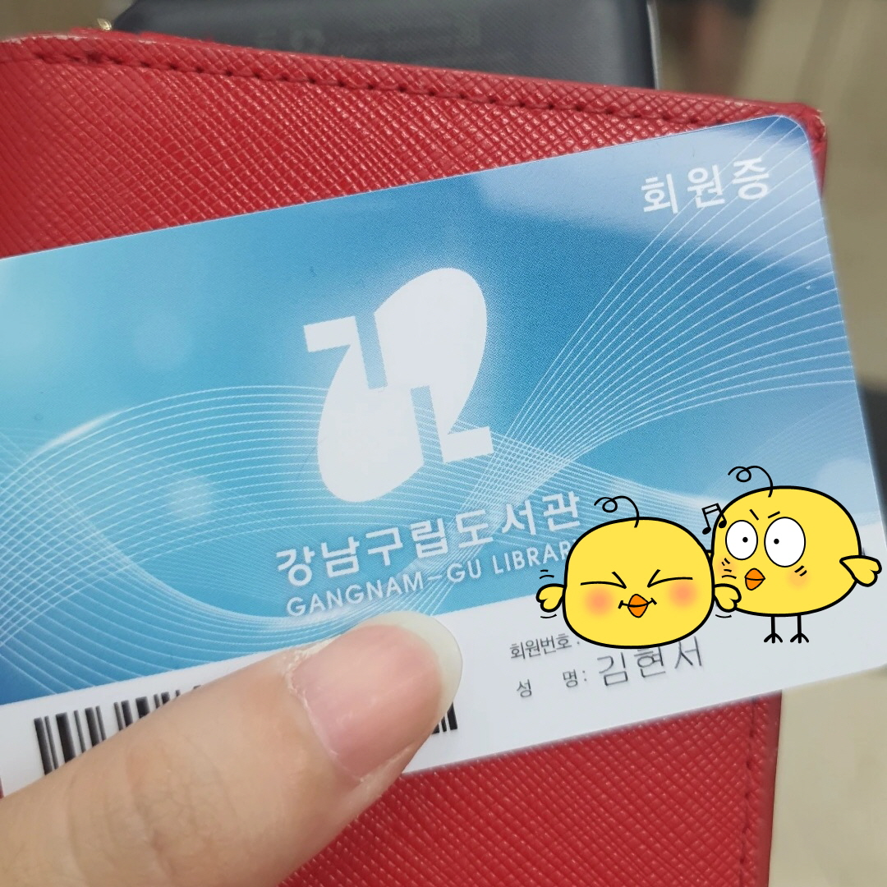

★ 현서의 일기 ★
날짜 : 2021년 8월 7일 요일 : 토요일 날씨 : 적당히 더운 날씨
 평일 내내 일하고 맞은 주말! 이보다 달콤할 수 있을까 ㅜㅜ
이번 주말에는 그래도 내가 그동안 미뤄왔던 것들을 해보려고 했다.
우선 도서관에 가는 것부터 시작! 오랜만에 책을 읽고 싶어서 주위 도서관을 검색해봤더니 집에서 걸어서 5분 거리에 강남구립 도서관이 있었다.
나는 그것도 모르고 매번 책 읽고 싶을 때나 공부하고 싶을 때 학교 도서관에 갔었는데... 과거의 나에게 '검색이라도 한 번 해보지 그랬냐' 하는 생각을 했다.
그렇게 해서 오랜만에 도서관에 들렀다. 사실 크게 빌리고 싶었던 책이 있던 건 아닌데, 책을 읽고싶다는 느낌이 강하게 들어 무작정 향해봤다.
오랜만에 도서관에 오니 도서관 특유의 그 묵직하고 차분한 공기가 색다르게 느껴졌다. 과거의 나는 이런 도서관 분위기를 좋아해서 종종 찾았던 것 같다.
코로나 때문이라는 핑계를 대며 도서관에 와서 책을 읽는 것, 빌리는 것을 미뤄왔지만 막상 도착해보니 너무 좋아서 그동안 오지 않았던 나 자신을 책망하게 됐다.
오래된 책들이 많았다. 한창 베스트 셀러로 팔리던 책들도 많았고, 내가 빠져서 읽었던 책들도 있었다.
처음으로 동네 도서관에 갔던 오늘은, 책을 빌리는 것이 목적이었던 것이 아니라 마치 과거의 나의 추억을 빌리는 느낌이었다.
주말이라 도서관은 5시에 문이 닫았고, 나는 추억에 젖어있다가 놀라 빠르게 눈에 띄었던 <나를 나답게 만드는 것들: 유전자, 세균, 그리고 나를 나답게 만드는 특이한 힘들에 관하여>라는 책과 <타임 트레블러 1: 위대한 유산>이라는 책을 대여했다.
그래서, 집에 와서 책을 읽었냐? 그러지 못했다. 집에 오니 벌써 가을 옷을 꺼내려 하시는 부모님이 내 방을 지키고 계셨다. 나는 부모님을 도와 옷 정리를 도왔고, 그러고 나니 벌써 저녁 시간이 되었다.
나는 도서관에서 책을 빌려 왔지만 책을 읽기는 커녕 짐정리를 하고, 밥을 먹고, 모각코 코딩을 하고, 따로 배우는 파이썬 데이터 공부만 했다. 다른 짓만 했다는 얘기다 ㅋㅋㅋㅋㅋ
원래 책이라는 건 삘 받았을 때 읽는 것이다. 오늘의 나는 책을 읽을 운명이 아니었나보다, 생각하고 이제 잠에 들려 한다! ㅎㅎ 내 자신, 고생했다! 그래도 동네 도서관 알아낸 건 진짜 잘했어!
우선 도서관에 가는 것부터 시작! 오랜만에 책을 읽고 싶어서 주위 도서관을 검색해봤더니 집에서 걸어서 5분 거리에 강남구립 도서관이 있었다.
나는 그것도 모르고 매번 책 읽고 싶을 때나 공부하고 싶을 때 학교 도서관에 갔었는데... 과거의 나에게 '검색이라도 한 번 해보지 그랬냐' 하는 생각을 했다.
그렇게 해서 오랜만에 도서관에 들렀다. 사실 크게 빌리고 싶었던 책이 있던 건 아닌데, 책을 읽고싶다는 느낌이 강하게 들어 무작정 향해봤다.
오랜만에 도서관에 오니 도서관 특유의 그 묵직하고 차분한 공기가 색다르게 느껴졌다. 과거의 나는 이런 도서관 분위기를 좋아해서 종종 찾았던 것 같다.
코로나 때문이라는 핑계를 대며 도서관에 와서 책을 읽는 것, 빌리는 것을 미뤄왔지만 막상 도착해보니 너무 좋아서 그동안 오지 않았던 나 자신을 책망하게 됐다.
오래된 책들이 많았다. 한창 베스트 셀러로 팔리던 책들도 많았고, 내가 빠져서 읽었던 책들도 있었다.
처음으로 동네 도서관에 갔던 오늘은, 책을 빌리는 것이 목적이었던 것이 아니라 마치 과거의 나의 추억을 빌리는 느낌이었다.
주말이라 도서관은 5시에 문이 닫았고, 나는 추억에 젖어있다가 놀라 빠르게 눈에 띄었던 <나를 나답게 만드는 것들: 유전자, 세균, 그리고 나를 나답게 만드는 특이한 힘들에 관하여>라는 책과 <타임 트레블러 1: 위대한 유산>이라는 책을 대여했다.
그래서, 집에 와서 책을 읽었냐? 그러지 못했다. 집에 오니 벌써 가을 옷을 꺼내려 하시는 부모님이 내 방을 지키고 계셨다. 나는 부모님을 도와 옷 정리를 도왔고, 그러고 나니 벌써 저녁 시간이 되었다.
나는 도서관에서 책을 빌려 왔지만 책을 읽기는 커녕 짐정리를 하고, 밥을 먹고, 모각코 코딩을 하고, 따로 배우는 파이썬 데이터 공부만 했다. 다른 짓만 했다는 얘기다 ㅋㅋㅋㅋㅋ
원래 책이라는 건 삘 받았을 때 읽는 것이다. 오늘의 나는 책을 읽을 운명이 아니었나보다, 생각하고 이제 잠에 들려 한다! ㅎㅎ 내 자신, 고생했다! 그래도 동네 도서관 알아낸 건 진짜 잘했어!